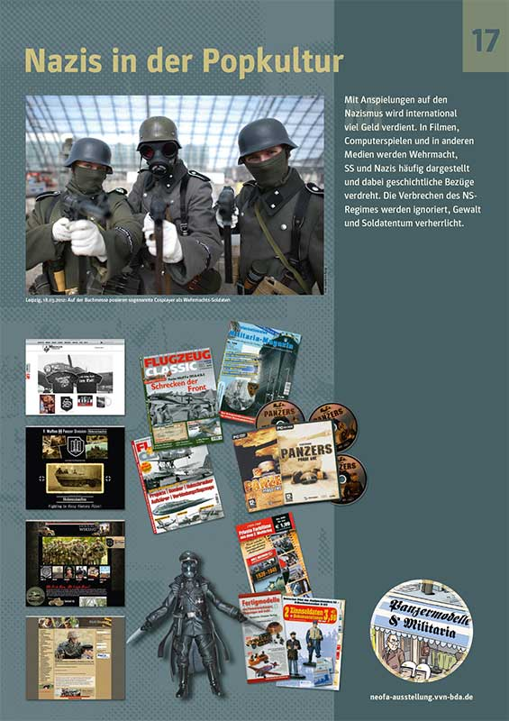

Zugesandter Gastbeitrag von T. Tessler

Am Abend des 28. Oktober fand die Eröffnung der Ausstellung „Neofaschismus in Deutschland“ im Mömlinger Rathaus statt. Gut 50 Leute folgten der Einladung von „Odenwald gegen Rechts“, was die Veranstalter durchaus zufrieden stellen dürfte. Es gab Redebeiträge von Vertretern des Bündnisses, die ihre Arbeit vorstellten und über die Ausstellung informierten. Ein Musiker-Duett lieferte zwischendurch musikalische Beiträge und Grünen-Landrat Scherf hielt einen kurzen Redebeitrag. Störungen der Veranstaltung seitens Neonazis gab es keine. (mehr…)
mb
Es ist nicht immer gut, wenn man schlussendlich mal wieder Recht behält. Denn in diesem Fall heißt es, dass wir von kommunal vorhergesehen haben (was aber nicht wirklich schwierig war), dass die Privatisierung der Krankenhäuser im Kreis Miltenberg schon kurzfristig zu Verschlechterungen führen musste und weiter führen wird. Zuerst gingen die Kliniken an den Rhön-Konzern, dann verkaufte dieser an Helios. Zuerst wurden die Beschwerden des Personals und der Patientinnen und Patienten größer, nun wird das Krankenhaus in Miltenberg faktisch dicht gemacht und nur das in Erlenbach bleibt bestehen. (mehr…)
übernommen von main.tv
Und nun die Preisfrage: Wer erkennt den wirklichen Skandal in diesem Filmbeitrag?
Info der Caritas MIL

P. Maximilian Kolbe (ermordet in Auschwitz) – Gemälde von Jutta Winterheld für das Franziskushaus
Seit Mai ist im Miltenberger Franziskushaus die Dauerausstellung mit Gemälden der Malerin Jutta Winterheld zu sehen. In fünf Caritasräumen im ehemaligen Franziskanerkloster werden seither Bilder zu Passion und Auferstehung der in Miltenberg lebenden Künstlerin gezeigt. In einigen Führungen konnten diese Gemälde der interessierten Öffentlichkeit bisher schon näher gebracht werden. (mehr…)
von Heinz / zugesandter Beitrag
Am Sonntag, den 12. November 2014, war der Flüchtlingsrat Bayern im Rahmen der Lagerinventour 2014 auch zu Besuch in den Landkreisen Miltenberg und Aschaffenburg. Besucht wurden die Unterkünfte in Mönchberg und Pflaumheim.
In Mönchberg sind 44 Menschen im (ehemaligen) Gasthof „Zum Hirschen“ untergebracht. Diese Unterkunft wird vom Verein SAN GIOVANNI ONLUS e.V. betrieben. Schon im Vorfeld des Besuches des Flüchtlingsrates wurde von Seiten des Landratsamtes Miltenberg und des Betreibervereins versucht den Besuch zu verhindern. (mehr…)
Odenwald gegen Rechts

In Deutschland werden Menschen, beschimpft, geschlagen oder ermordet, weil sie aufgrund ihrer Herkunft, ihres Aussehens oder ihrer Lebensweise nicht in das Bild passen, das Nazis vom „Deutschen“ haben. Über 180 Todesopfer hat die neofaschistische und rassistische Gewalt seit 1990 bereits gefordert, möglicherweise ein Mehrfaches davon – weil Hinweise auf neofaschistische Tatmotive nicht verfolgt wurden.
Gerade in Mömlingen wurden in der Vergangenheit neofaschistische Tendenzen eher verschwiegen, anstatt sich diesen in den Weg zu stellen. Es war kein Zufall, dass 2006 bei Ermittlungen gegen das verbotene Neonazi-Netzwerk »Blood & Honour« Hausdurchsuchungen in Mömlingen durchgeführt worden sind.
Die Abwehr von Rassismus, Antisemitismus und Fremdenfeindlichkeit geht jeden etwas an. Deshalb möchten wir als Bündnis „Odenwald gegen Rechts“ ein Zeichen gegen fremdenfeindliches Gedankengut setzen. Für den 28.10. ist eine Eröffnungsveranstaltung um 19.00 Uhr geplant, zu der alle Interessierten herzlich eingeladen sind.
Die Ausstellung informiert über die Ideologie und Praxis des Neofaschismus und benennt Ursachen für die Ausbreitung dieser menschenverachtenden Ideologie.
Info Martinushaus Aschaffenburg
Wer mit offenen Augen durchs Leben läuft, begegnet der Armut täglich. Ob wir Geld und Kleider spenden oder uns für eine Tafel engagieren – es ist eine Dilemma-Situation: Armutslinderung hilft dem konkreten Menschen in Not, stabilisiert aber auch die Strukturen, die Armut aufrecht erhalten. Der Vortrag des Sozialethikers Dr. Franz Segbers zeigt Wege auf, mit der Armut vor unserer Haustüre verantwortungsvoll umzugehen.
Dr. Franz Segbers, Theologe
Einttritt 4,00 EUR
Franziskushaus, Hauptstraße 60, 63897 Miltenberg
Montag, 03.11.2014, 20.00 Uhr
In Kooperation mit dem Martinsladen Miltenberg
Segbers engagiert sich im Kampf gegen die neoliberale Globalisierung und arbeitet mit marxistischen Kategorien an einer theologischen Kritik des Kapitalismus als Religion. (Wikipedia)
zugegangener Hinweis / Kommentar: mb

Die Alternative für Deutschland (AfD) ist zwar nicht nazistisch, sondern neoliberal-asozial-rassistisch und vereint damit das Übelste, was bürgerliche Ideologie hervorbringen kann – aber sie hat offene Sympathien für die eindeutig rechtsextreme bzw. neo-nazistische Partei „Der III. Weg“. Denn der AfD-Verband in Aachen zitiert diese Nazipartei positiv – und verwendet dabei zur Illustraion ein Bild des Hochwassers in Miltenberg. Und warum? Weil die durch die neue deutsche Volksgemeinschaft gesammelten Gelder für (deutsche!) Hochwassergeschädigte nun doch nicht benötigt und daher zur Flüchtlingsunterbringung eingesetzt werden sollen. Ist ja auch ein Skandal: Geld, das für brave Deutsche in den braun-versumpften Beitrittsgebieten eingesetzt werden sollte, geht nun an das Gesockse aus Bananenland oder von sonstwo her. Da empören sich der deutsche Gartenwichtel und die deutsche Fettleber auf das Allerextremste!
Halkevi Aschaffenburg
Wir rufen alle DemokratInnen, AntifaschistInnnen und HumanistInnen zur Teilnahme an der Demonstration morgen, 10. Oktober vor der City-Galerie um 19.00 Uhr auf!
Der Kanton Kobanê in Rojava, im Norden Syriens, wird seit mehr als drei Wochen von den Terrorbanden des Islamischen Staates (IS) an drei Seiten und von türkischen Truppen im Norden belagert. Gegen ein drohendes Massaker an der kurdischen Bevölkerung Kobanês kämpfen zur Stunde an den Grenzen der Stadt Selbstverteidigungseinheiten der YPG/YPJ, in einem entschlossenen und mutigen Widerstand mit leichten Waffen, gegen die Panzer und eine schwere Artillerie des IS. Fast stündlich werden neue Angriffswellen des IS zurückgeschlagen.
(mehr…)
zugegangene Information der Veranstalter
Offene und verbandliche Jugendarbeit organisieren gemeinsame Aktion zum Gedenken an die Reichspogromnacht. 09.11.2014, 15:00, JUKUZ Aschaffenburg
(mehr…)
Info von attac Aschaffenburg-Miltenberg
Kommt zum europäischen Aktionstag am 11. Oktober 2014 in Frankfurt am Main um 13 Uhr auf dem Römer
Seit dem Jahr 2013 wird das transatlantische Handels- und Investitionsschutzabkommen TTIP zwischen der EU und den USA hinter verschlossenen Türen verhandelt. TTIP ist, wie auch die geplanten Abkommen CETA und TISA, brandgefährlich: Freihandel klingt gut, ist es aber nicht. Denn Schutz und Rechte von ArbeitnehmerInnen sowie Umweltstandards sollen mit diesen Abkommen abgebaut werden. Bedroht ist auch die öffentliche Daseinsvorsorge, der Verbraucherschutz und unser Gesundheitswesen. (mehr…)
Redaktion kommunal
Es gibt Zeiten, da muss einmal an die Tradition der Linken erinnert werden, die zwar stets antimilitaristisch aber bei weitem nicht immer pazifistisch war. Aus guten Grund: Nazi-Deutschland, Pol Pot und jetzt die ISIS-Faschisten waren und sind nicht mit Worten zu bekämpfen. Leider.
Wir stellen zur Diskussion: